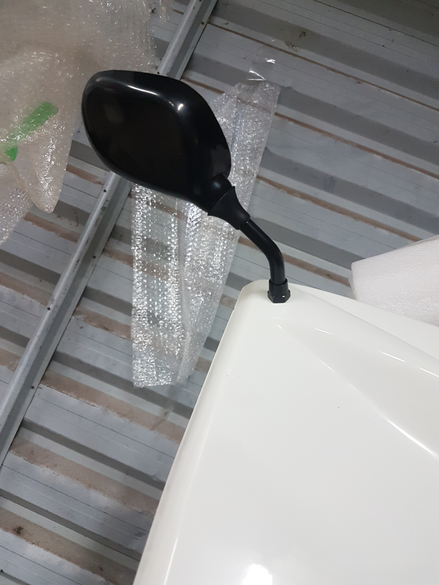

There are 2 options here, either mount to the top chassis rail, or to the bonnet. We chose the bonnet.
- Mark both sides of the bonnet in the small flat (ish) area, ensuring clearance for wind deflector.
- mark the center of the bonnet, again ensuring the clearance.
- Drill using a stepper drill to the required 8(?)mm size
- Fit the mirrors with another tightness not to slip but can be moved.
- Site in the car, adjust the angles
- Tightent the locking nut from the top of the mirror to hold them in place.
